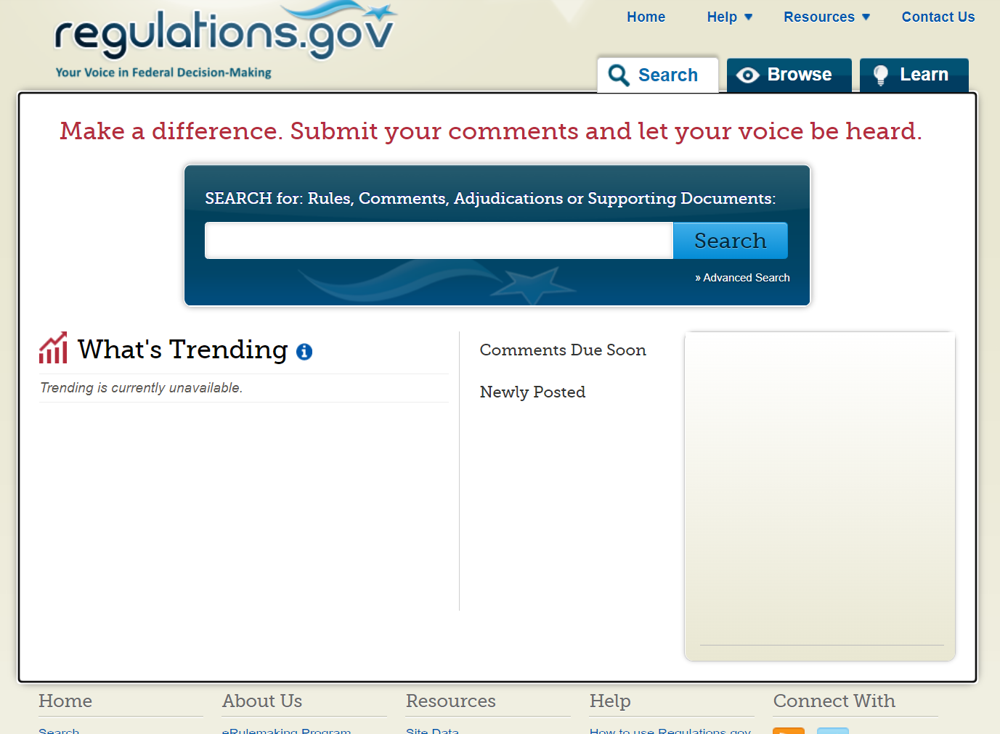
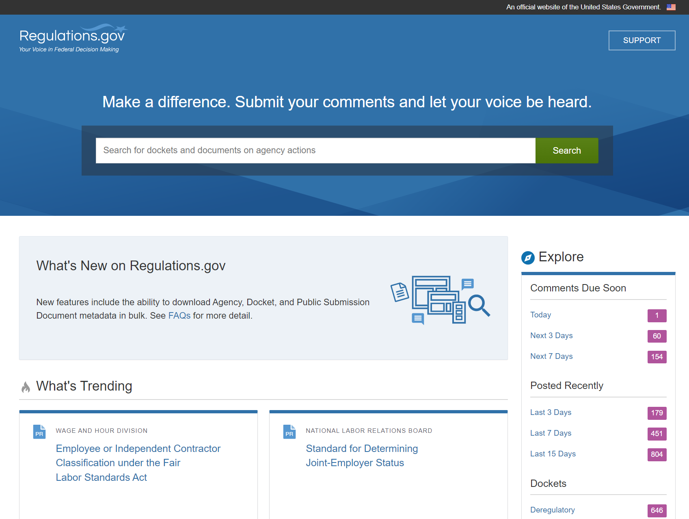
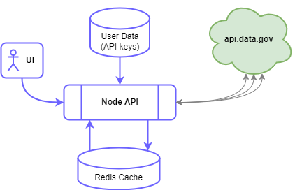

<style>
    div.slides { background-color: #fff !important; }
    .image-color { background-color: #6C63FF; }
    .reveal section h1 { text-transform: none; }
    .reveal section sup { font-size: 0.6em; position: relative; top: -1em; }
    .reveal section .dark-bg-header { color: #fff; font-weight: bold; text-shadow: 0.05em 0.05em 0.1em #000; }
    .reveal section .code-site { position: relative; text-align: center; bottom: -2em;  }
    .reveal .code-site:before { content: ""; }
    .reveal section cite { width: 100%; text-align: center; }

    .reveal img { max-width: 100%; }
    .reveal .main-image { width: 30rem; }
    .reveal .secondary-image { width: 20rem; }

    .reveal .side-by-side { display: flex; justify-content: space-evenly; }
    .reveal .side-by-side aside { width: 40%; }
    .reveal .side-by-side img { width: 100%; }

    .reveal li { margin: 0.5rem 0; }
</style>


<!-- INTRO -->

<section>
    <h1>Anyone Can be a #CivicTech Hero</h1>
    

    <aside class='notes'>
        * Whether you realize it or not, you benefit from government technology<br>
        * But Government tech struggles to keep up with industry, in large people because of a lack of talent<br>
        * Simple fact is: tech is created by the people who show up<br>
        * We need smart people like all of you get involved<br>
        * Share my journey with a recent example, and talk about how you can be a #civictech hero
    </aside>
</section>

<section>
    <h1>Who am I?</h1>
    <br>
    <a href='https://jordankasper.com' target='_blank'>Sr Advisor, Office of the CIO,<br>Department of Homeland Security</a>

    <aside class='notes'>
		* SW engineer<br>
        * Startups, big companies, lots of community engagement: dev advocate, code school instructor, conf speaking, usergroup organizing<br>
        * Leaving a role and a friend talked to me about US Digital Service<br>
        * It was a natural extension from my community focus<br>
        * I was driven by the impact my work could have on a broader demographic
	</aside>
</section>

<section>
    <main class='side-by-side'>
        <aside>
            
        </aside>
        <article>
            <h1>Civic Tech<br>in 3 Easy Steps</h1>
            <br>
            <ol style='margin-left: 4rem;'>
                <li class='fragment'>Identify a problem</li>
                <li class='fragment'>Find a dataset or API</li>
                <li class='fragment'>Build an MVP</li>
            </ol>
        </article>
    </main>
    
    <aside class='notes'>
        * I'd like to tell you a story of one recent civic tech journey I took, and how you can do so in 3 easy steps<br>
		1. Problem doesn't have to be big and flashy, just find a user and ask about pain points<br>
        2. We'll talk about open data and APIs, and where you can find them<br>
        3. Build one, small thing. Put it out there, get someone using it, collect feedback, repeat!
	</aside>
</section>


<!-- My Recent Experience -->

<section>
    <h1>A Real World Example</h1>
    

    <aside class='notes'>
        * I've worked with a lot of government tech, but this story isn't about that<br>
        * This story is about solving one group's problem with open source data and technology
    </aside>
</section>

<section>
    
    
    <aside class='notes'>
        * Important site for public engagement with the government, but also for administrative law professionals<br>
        * Allows anyone to see proposed rules & regulations from gov agencies, and allows them to comment on proposals<br>
        * The government is <strong>required</strong> to read those comments when considering rule changes
    </aside>
</section>

<section>
    <p>The <strong>Old</strong> Regulations.gov</p>
    
    

    <aside class='notes'>
        * Image from the "WayBack" machine at archive.org from January 2021<br>
        * Site was created in 2003 - and uses Flash<br>
        * Just to reiterate, this screenshot was from January 2021<br>
        * For reference, Flash reached EOL on December 31, 2020 and Adobe ceased all support for it at that time
    </aside>
</section>

<section>
    <p>The <strong>New</strong> Regulations.gov</p>
    
    

    <aside class='notes'>
        * Beta tested in late 2020 and fully live in February 2021<br>
        * New site looks nice, but does not have full functionality of old site<br>
        * It was clear they had not done sufficient (or any) direct user research<br>
        * But this isn't a rage session on regulations.gov or GSA<br>
        * General Services Administration (or GSA) is working to make it better
    </aside>
</section>

<section>
    <h1>1. Identify a problem</h1>
    

    <aside class='notes'>
        * I knew someone who was complaining about this site and its poor functionality<br>
        * I listened, asked questions, and asked what would make things better<br>
        * (go back one slide) One issue was that many lawyers copy & paste a "docket ID" from the Federal Register into regulations.goc<br>
        * this copied ID has a special character in it that regulations.gov doesn't recognize, meaning the search fails<br>
        * This is an easy fix: we know what special character it is, so we just remove it before performing a search<br>
        * Then, I needed to do some investigation...
    </aside>
</section>

<section>
    
    <h1>2. Find a dataset or API</h1>
    
    <aside class='notes'>
        * Applications run on data. And for this project, I couldn't create or collect the data myself<br>
        * After some light poking around the new regulations.gov, I found that all of their data is available on api.data.gov
    </aside>
</section>

<section>
    <main class='side-by-side'>
        <aside>
            
        </aside>
        <article>
            <h2>Open Source<br>Government Data</h2>

            <ul style='margin-left: 30%;'>
                <li class='fragment'><a href='https://data.usgs.gov' target='_blank'>data.usgs.gov</a></li>
                <li class='fragment'><a href='https://healthdata.gov' target='_blank'>healthdata.gov</a></li>
                <li class='fragment'><a href='https://data.gov' target='_blank'>data.gov</a></li>
            </ul>
        </article>
    </main>

    <aside class='notes'>
        * US Geological Survey has hundreds of datasets on everything from (A)bandoned mines to (Z)inc deposit concentrations<br>
        * If you need data on health and medical issues you have healthdata.gov<br>
        * data.gov hosts thousands of open datasets and is updated regularly; for example, they have 438 datasets on climate!<br>
        * Many agencies have their own open data sites, but also list their data on data.gov<br>
    </aside>
</section>

<section>
    <h1>Open Source Data at DHS</h1>

    <main class='side-by-side'>
        <aside>
            
        </aside>
        
        <article>
            <ul style='margin-left: 10%;'>
                <li class='fragment'>Data Inventory Program</li>
                <li class='fragment'>Open Sourcing Data on data.gov</li>
                <li class='fragment'>Open Data Standards and Data Stewardship</li>
                <li class='fragment'><a href='https://dhs.gov/data' target='_blank'>dhs.gov/data</a></li>
            </ul>
        </article>

    </main>
</section>

<section>
    <h1>Data is great, but what about APIs?</h1>
    
</section>

<section>
    <h1><a href='https://api.data.gov'>api.data.gov</a></h1>
    

    <aside class='notes'>
        * 17 government organizations host their APIs through here, including regulations.gov!<br>
        * GSA regs.gov API is realtively modern: uses HTTP Methods, authentication keys, and mostly JSON<br>
        * I had identified a problem, I found the data to solve that problem, now I needed to do something about it
    </aside>
</section>

<section>
    
    <h1>3. Build an MVP</h1>

    <aside class='notes'>
        * I listened to my users, but now I needed to build something and validate that solution with my users<br>
        * My first step was to play with the API and data to see how I can use it to solve my user's problem
    </aside>
</section>

<section>
    <h1>Early Pain Points</h1>
    

    <p class='fragment'>API key rate limits</p>
    <p class='fragment'>Poor data architecture and API design</p>
    <p class='fragment'>Lack of (good) documentation</p>

    <aside class='notes'>
        * API rate limit of 1000 per hour, but there's no commercial option, no paid plans!<br>
        * API limit wouldn't be as much of an issue except that the data architecture is poor<br>
        * Specifically, each comment requires an individual API request, and many proposed regulations can have tens of thousands of comments<br>
        * With many of these APIs the documentation is not great (some have swagger docs, not all)
    </aside>
</section>

<section>
    <h1>My Solution</h1>

    <p class='fragment'>
        Step 1: Have user's register for an API key
    </p>

    <main class='side-by-side'>
        <aside>
            
        </aside>
        <article>
            <ol>
                <li class='fragment'>User requests data</li>
                <li class='fragment'>Check the cache</li>
                <li class='fragment'>Get data from API</li>
                <li class='fragment'>Cache data (30 days)</li>
            </ol>
        </article>
    </main>

    <aside class='notes'>
        Step 1. ask user to register on api.data.gov and trust us with their key<br>
        * User's enter docket ID, or specific "document" ID<br>
        * We cache data from API, so all users benefit<br>
        * If data is not cached, use user's API key to hit API<br>
        * Have to make multiple calls for most requests (get all comments), which we do in batches due to second rate limit (req/s)<br>
        * Cache data 30 days, data doesn't really change
    </aside>
</section>

<section>
    <h1>What about the UI?</h1>
    

    <aside class='notes'>
        * Now that I have the data retrieval figured out, what about the user experience?
    </aside>
</section>

<section>
    <h2 style='text-transform: none;'>For our UI framework, we want something...</h2>
    <ul class='center'>
        <li class='fragment'>open source</li>
        <li class='fragment'>with a good base of functionality</li>
        <li class='fragment'>accessible and well tested</li>
        <li class='fragment'>maintained by a trusted organization</li>
        <li class='fragment'>with good development velocity</li>
    </ul>

    <p class='fragment'>
        
        U.S. Web Design System, <em>maintained by GSA</em>
        <a href='https://github.com/uswds/uswds' target='_blank'>github.com/uswds</a>
    </p>

    <aside class='notes'>
        * lots of reusable components, and theme-able<br>
        * Especially good for gov-adjacent work, this fits in nicely
    </aside>
</section>

<section>
    <p style='margin-bottom: 2em;'><a href='https://www.fedgovregs.org/' target='_blank'>fedgovregs.org</a></p>

    

    <aside class='notes'>
        * Lots of documents and comments on: EPA-HQ-OAR-2003-0197
    </aside>
</section>


<!-- How to get into civictech -->

<section>
    
    <h1>How can you become a #CivicTech hero?</h1>
</section>

<section>
    <h1>Solve a problem.</h1>

    <p class='fragment' style='margin-top: 1em;'>Find a non-profit that needs help,<br>or just talk to your friends!</p>
    <p class='fragment' style='margin-top: 1em;'>You don't have to solve all of the world's problems.</p>
    <p class='fragment' style='margin-top: 1em;'>Start small!</p>

    <aside class='notes'>
        
    </aside>
</section>

<section>
    <h1>Contribute to government OSS.</h1>
    
    <p class='fragment' style='margin-top: 1em;'>
        <a href='https://github.com/uswds/uswds' target='_blank'>
            
            U.S. Web Design System
        </a>
    </p>
    <p class='fragment' style='margin-top: 1em;'>
        <a href='https://code.gov' target='_blank'>
            <br>
            https://code.gov
        </a>
    </p>

    <aside class='notes'>
        * USWDS accepts public contributions through Pull Requests<br>
        * code.gov collects data on open source projects and GitHub organizations from all around the federal government
    </aside>
</section>

<section>
    <h1>Raise your voice.</h1>
    
    <p style='margin-top: 1em;'>Visit <strong>regulations.gov</strong> and look for opportunities to voice your expert opinion on technical policies!</p>

    <aside class='notes'>
        * Can search regulations.gov for topics you're interested in
        * DoL data RFI is on how to design and implement an open data policy
        * What protocols or data formats should they use? Speak up!
    </aside>
</section>

<section>
    <h1>Join up!</h1>

    <ul style='margin-left: 30%'>
        <li><a href='https://usds.gov' target='_blank'>U.S. Digital Service</a> (OMB)</li>
        <li><a href='https://www.usdigitalresponse.org' target='_blank'>U.S. Digital Response</a> (non-profit)</li>
        <li><a href='https://www.techcongress.io/' target='_blank'>TechCongress</a></li>
        <li><a href='https://digitalcorps.gsa.gov' target='_blank'>U.S. Digital Corps</a> (GSA)</li>
        <li><a href='https://billhunt.dev/jobs/' target='_blank'>CivicTech Job Board</a></li>
        <li><a href='https://18f.gsa.gov' target='_blank'>18F</a> (GSA)</li>
        <li>Come talk to me!</li>
    </ul>
</section>


<!-- OUTRO -->

<section>
    <h1 style='text-transform: none; margin-bottom: 1em;'>Anyone Can be a #CivicTech Hero</h1>

    <p>
        Slides: <a href='https://jordankasper.com/civictech' target='_blank'>jordankasper.com/civictech</a>
    </p>

    <p style='margin-top: 2rem; font-size: 0.8em;'>
        FedGovRegs code:<br>
        <a href='https://github.com/jakerella/usgov-regs/' target='_blank'>github.com/jakerella/usgov-regs</a>
    </p>

    <p style='font-size: 0.7em; font-style: italic; margin-top: 2em; color: #888;'>
        Read the 
        <a href='https://democracyforward.org/wp-content/uploads/2021/05/Letter-to-GSA-re-Regulations-Gov-Website-5.17.21.pdf' target='_blank'>letter from Democracy Forward</a> 
        to GSA about regulaltions.gov.
    </p>

    <cite><a href='https://undraw.co/' target='_blank'>unDraw</a></cite>
</section>
